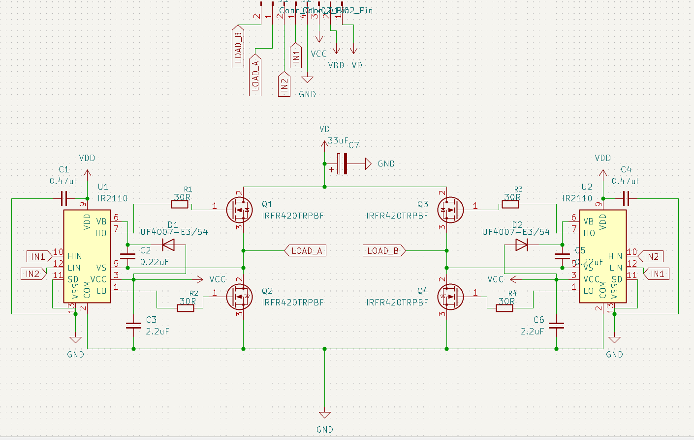

A research-driven biomedical project implementing a feedback control system for transcutaneous electrical nerve stimulation (TENS) targeting the core clinical problem of stimulation variability caused by the skin-electrode interface.
Project start: Feb 5, 2026
Status: Under Active Development
Conventional TENS devices deliver open-loop stimulation. They output a fixed waveform regardless of what's actually happening at the skin-electrode interface. The problem is that skin impedance is dynamic: it changes with moisture, electrode placement, and over time during a session. This means the actual current reaching the nerve tissue varies significantly, making therapeutic outcomes inconsistent as well as driving difficult to replicate research.
This project investigates whether a closed-loop approach, using real-time sensing of delivered current to actively regulate the stimulation output, can meaningfully reduce this variability. It is simultaneously a embedded systems engineering project and a research investigation; see the Research Proposal for the full academic framing.
Current hardware design is centered around rapid prototyping and iteration. The prototype is built around an STM32 Nucleo board that sends PWM signals to an L293D H-bridge driver to generate a balanced biphasic waveform for high-voltage, low-current stimulation. A sense resistor in series with the output allows for real-time current measurement via the STM32's ADC, enabling the feedback control loop.
Firmware uses the STM32's synchronised timer interrupts to precisely update the waveform output at the desired frequency. ADC sampling is timed to land centrally within the pulse to accurately capture the average current delivered. ADC readings are processed through a calibrated feedback loop to adjust the signal's phase width by updating the timers' interrupt registers in real time.
PCB design is currently centered around designing a high-voltage output H-Bridge stage board to replace the L293D in bench testing. The design utilises two IR2110 high side and low side mosfet drivers and high voltage mosfets for efficient power delivery. See the KiCad schematic below:

This section will document design challenges and fixes as the system moves through bench testing. Debugging logs, oscilloscope captures, and design change rationale will be added here as the project progresses.
Testing phase is not yet complete. Planned validation targets:
| Test | Status |
|---|---|
| Output Current Stability (open-loop baseline) | Planned |
| ADC Sampling Rate & Accuracy | In Progress |
| Closed-Loop Regulation Performance | In Development |
| Impedance Perturbation Response | Planned |
Hardware photos will be added as bench assembly and testing progresses.